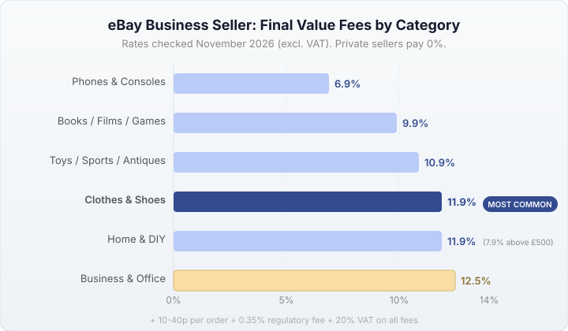
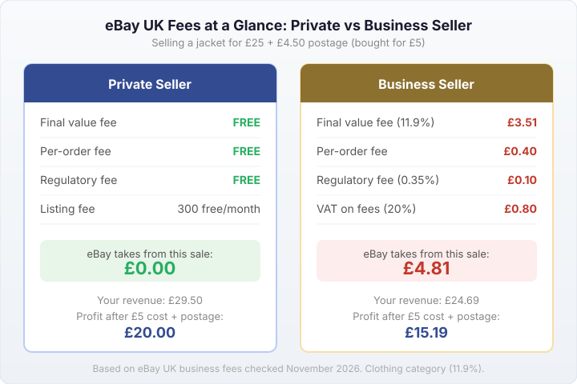
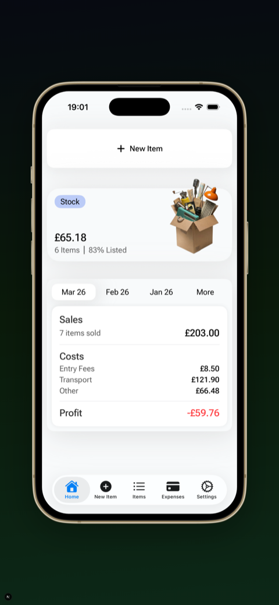

Last updated: 11 November 2026
eBay Selling Fees UK 2026: Complete Breakdown for Private and Business Sellers
If you sell on eBay UK, the fee structure changed again in February 2026 and it confuses a lot of people. The biggest thing most sellers miss: private sellers now pay zero final value fees. If you’re selling from home as an individual, eBay takes nothing when your item sells.
Business sellers still pay final value fees (the eBay final value fee is the main cost), and those went up slightly in some categories. Here’s the full breakdown so you know exactly how much eBay charges to sell — whether you’re a private or business seller. If you just want to calculate your fees quickly, use our eBay fee calculator.
Private sellers: it’s free to sell
Since October 2024, UK-based private sellers pay no final value fees and no regulatory operating fees. This applies to all categories except motors (cars, motorcycles, vehicles).
What you get as a private seller:
- 300 free listings per month (400 with an eBay Shop subscription)
- No final value fee when your item sells
- No regulatory operating fee
The only fees private sellers pay are:
- 35p per listing if you go over your 300 free monthly allowance
- 3% international fee if the buyer’s delivery address is outside the UK
- Optional listing upgrades such as subtitles or promoted listings (most sellers don’t use these)
Source: eBay UK — Selling fees for private sellers
The catch: buyers pay a Buyer Protection fee
When someone buys from a UK private seller, eBay adds a Buyer Protection fee to the price the buyer sees. You don’t pay it. But the fee makes your item look more expensive than the same item from a business seller or on Vinted. The fee (including VAT) is:
- 10p flat per item, plus
- 7% of the item price up to £20, plus
- 4% of the part from £20 to £300, plus
- 2% of the part from £300 to £4,000 (nothing above £4,000)
For example, on a £25 jacket the buyer pays £1.70 on top (10p + £1.40 + 20p). Think about this fee when you set your price. On cheap items, the fee is a large part of what the buyer pays.
Source: eBay UK — Buyer Protection fee
Business sellers: final value fees by category

If you’re registered as a business seller on eBay UK, you pay a final value fee on every sale. This is a percentage of the total sale amount (item price + postage + any applicable taxes).
As of November 2026, the main reseller categories and their fees are:
| Category | Final value fee (excl. VAT) |
|---|---|
| Clothes, Shoes & Accessories | 11.9% (women’s bags 12.9% up to £800) |
| Home, Furniture & DIY | 11.9% up to £500, 7.9% above |
| Toys & Games | 10.9% |
| Antiques, Collectables, Pottery & Glass | 10.9% |
| Books, Comics & Magazines | 9.9% |
| Films & TV, Music, Video Games | 9.9% (consoles 6.9% up to £400) |
| Sporting Goods | 10.9% |
| Jewellery & Watches | 14.9% up to £1,000, 4% above |
| Mobile & Smart Phones | 6.9% up to £1,000, 3% above |
| Business, Office & Industrial | 12.5% (was 11.9% before Feb 2026) |
| Vehicle Parts & Accessories | 9.5% up to £750, 3% above |
| Wholesale & Job Lots, Everything Else | 12.9% |
eBay lists business fees excluding VAT and adds 20% VAT on top. So an 11.9% final value fee costs about 14.3% of the sale. If you’re VAT-registered you can usually reclaim that VAT.
For the complete category list, check eBay UK — Fees for business sellers (last updated by eBay on 5 November 2026).
Per-order fee (the bit that changed in February 2026)
On top of the percentage-based final value fee, business sellers pay a fixed per-order fee:
- Orders of £10 or less: 30p per order
- Orders over £10: 40p per order (was 30p before 12 February 2026)
This fee applies to every order in every category. The fee is small on high-value items. On cheaper items, it is a larger part of the price.
Regulatory operating fee
Business sellers also pay a 0.35% regulatory operating fee on all sales. This fee covers eBay’s compliance costs. eBay calculates it on the total sale amount, including postage.
Private sellers don’t pay this fee.
Less common fees worth knowing
- Dispute fee: if you’re found responsible for a chargeback or other disputed payment, eBay charges £16.80 including VAT (£14 + VAT for business sellers).
- Currency conversion: eBay can convert your money when you list or sell on another eBay site (for example, eBay.de). If it does, it keeps a conversion charge of 2.5%. From 1 December 2026, the charge rises to 2.75%.
Sources: eBay UK — Selling fees for private sellers and Fees for business sellers
Listing fees (insertion fees)
eBay calls these listing fees. Many sellers still call them insertion fees. eBay charges them when you create a listing, whether or not the item sells.
- Private sellers: 300 free listings/month (400 with a Shop subscription), then 35p per listing
- Business sellers without a Shop: no free allowance — 30p + VAT per fixed-price or auction listing
- Business sellers with a Shop: a free allowance by tier, then 10p, 5p or free per extra fixed-price listing (see the Shop table below)
Multi-quantity listings and variations only count as one listing.
Be careful with Good ’Til Cancelled listings. eBay charges the listing fee again every month the listing renews. It also charges the fee every time you relist an item. If you’re a business seller without a Shop, an item that sells slowly can cost you 36p a month.
International fee
If a buyer’s delivery address is outside the UK, you pay an international fee on the total sale amount:
- Private sellers: 3% (all international destinations)
- Business sellers: 1.05% (Eurozone & Nordic countries), 1.8% (US & Canada), 2.0% (all other countries)
You won’t pay it if you post abroad with eBay International Shipping on eligible listings. You can also avoid it by excluding international delivery in your listing settings. The business rates exclude VAT.
eBay Shop subscriptions
These are the business Shop tiers on eBay’s fee page (prices exclude VAT). Private sellers can also subscribe to a Shop for 100 extra free listings a month.
| Plan | Monthly price | Free listings/month | Extra fixed-price listing |
|---|---|---|---|
| No Shop | — | None | 30p |
| Basic | £27 | 250 fixed-price + 100 auction | 10p |
| Featured | £77 | 1,500 fixed-price + 600 auction | 5p |
| Anchor | £437 | Unlimited fixed-price + 1,000 auction | Free |
If you are a private seller and sell under 300 items per month, you usually don’t need a Shop subscription. As a business seller, Basic saves you money only when your listing fees would be more than about £27 a month. That is about 90 listings without a Shop.
Worked example: what does eBay actually take?
For example, you buy a jacket at a car boot sale for £5. You sell it on eBay for £25 and charge the buyer £4.50 for postage.
As a private seller
- Final value fee: £0 (private sellers sell free)
- Listing fee: £0 (within your 300 free listings)
- eBay takes: £0
- Your revenue: £29.50 (item + postage)
- After purchase price and postage cost: your profit depends on your actual Royal Mail/Evri cost
As a business seller (Clothes, Shoes & Accessories at 11.9%)
- Total sale: £29.50 (item + postage)
- Final value fee: £29.50 × 11.9% = £3.51
- Per-order fee: £0.40 (order over £10)
- Regulatory operating fee: £29.50 × 0.35% = £0.10
- VAT on fees (20%): £0.80
- Total eBay takes: £4.81
- Your revenue: £24.69
These figures do not include the £5 purchase price, the real postage cost, packaging, or any entry fees or transport from sourcing. Your real profit on this item might be £10-12 as a business seller, or £15-17 as a private seller.
This is why you need to know your real profit after all expenses. Use our eBay fee calculator to calculate the exact fees for an item before you list it.


How do eBay fees compare with other platforms?
| Platform | Seller fees |
|---|---|
| eBay UK (private seller) | Free (0%) |
| eBay UK (business seller) | ~16-17% total on a typical £20-30 clothing sale (final value + per-order + regulatory + VAT) |
| Vinted | 0% seller fee (buyer pays a “Vinted fee”, usually 3-8% + 30-80p) |
| Facebook Marketplace (local) | Free (0%) |
| Depop | 0% selling fee (buyer pays protection; seller pays 2.9% + 30p payment processing) |
| Gumtree | Free (private listings) |
For most resellers who sell clothing and accessories, eBay (as a private seller) and Vinted are now both effectively free to sell on. The difference is the audience. eBay has 30 million+ active buyers in the UK and supports every category. Vinted is mainly for fashion. For a detailed look at what Vinted charges, see our Vinted fees breakdown. Also remember the cost of postage. For current rates, see our Royal Mail postage prices guide.
Private seller vs business seller: which am I?
eBay doesn’t decide this for you based on volume. It depends on whether you sell personal items that you already own (private) or buy items specifically to resell for profit (business).
HMRC has its own rules about this. If your reselling income exceeds the £1,000 trading allowance, you may need to register as self-employed. At that point, being a business seller on eBay makes more sense.
Many resellers start as private sellers and switch when their volume grows. There’s no requirement to switch at a specific number of sales. If you are new to selling, see our beginner’s guide to selling on eBay UK. To see what sells before you list, read most sold items on eBay UK.
Frequently asked questions
How much does eBay charge to sell in the UK?
Private sellers pay nothing — selling is free up to 300 listings per month. Business sellers pay 9.9-12.9% (excl. VAT) in most categories (11.9% for clothes), plus 30p or 40p per order and a 0.35% regulatory operating fee.
Do private sellers pay fees on eBay UK?
No. Since October 2024, UK private sellers pay no final value fees. Fees only apply if you exceed 300 listings/month, use optional upgrades, or ship internationally. Your buyer pays a Buyer Protection fee instead.
What changed with eBay UK fees in February 2026?
The per-order fee went from 30p to 40p on orders over £10 for business sellers. Some category fees also increased slightly.
Is it free to list on eBay UK?
For private sellers, yes: 300 free listings/month, then 35p each. Business sellers without a Shop get no free listings and pay 30p + VAT per listing; Shop tiers include free listings.
What is the eBay insertion fee in the UK?
eBay charges the insertion fee (eBay now calls it a listing fee) when you create a listing. Private sellers get 300 free listings a month, then pay 35p each. Business sellers without an eBay Shop pay 30p + VAT per listing. eBay charges the fee again every time you relist and every month a Good ’Til Cancelled listing renews.
What is the eBay Buyer Protection fee?
It’s a fee the buyer pays when buying from a UK private seller. The fee is 10p per item plus 7% of the price up to £20. The fee also includes 4% of the part from £20 to £300 and 2% of the part from £300 to £4,000. These amounts include VAT. The seller doesn’t pay it, but it is included in the price buyers see.
How much does an eBay business account cost?
Without an eBay Shop there’s no monthly charge (eBay calls it “pay as you sell”). You pay per sale: a final value fee by category (11.9% for clothes), 30p or 40p per order and a 0.35% regulatory operating fee. You also pay VAT on these fees. Without a Shop, each listing costs 30p + VAT. Shop subscriptions cost £27 (Basic), £77 (Featured) or £437 (Anchor) a month, excluding VAT.
How does eBay managed payments work?
All eBay UK sellers now use eBay managed payments (no more PayPal). eBay collects the buyer’s payment, deducts fees, and sends the rest to your bank account. Payouts are typically processed daily, arriving in 1–2 business days. All the fees in this guide are deducted through managed payments automatically.
What is the eBay final value fee?
The final value fee is the main selling fee for eBay business sellers. It’s a percentage of the total sale amount (item price + postage) that eBay deducts when your item sells. Most categories are between 9.9% and 12.9% (clothes 11.9%, books 9.9%, toys 10.9%). Phones and consoles have lower rates, and jewellery has rates up to 14.9%. UK private sellers don’t pay final value fees at all.
Are eBay fees worth it compared to Vinted or Facebook Marketplace?
If you’re a private seller, eBay is free, the same as Vinted and Facebook Marketplace. The advantage is eBay’s large buyer base (30M+ UK). As a business seller, you pay ~16% on a typical clothing sale. In that case, the answer depends on whether eBay’s audience brings enough extra sales to be worth the fees. Many resellers list on all three platforms to reach more buyers.
About the author
I’m Oleksandr, the developer behind FlipperHelper. My wife sells on eBay, Vinted, and Facebook Marketplace. We deal with eBay’s fee structure all the time, especially the difference between private and business seller rates. I built the app because eBay’s “sold for” price never shows your real profit. The app tracks real profit per item after all fees, postage, and sourcing costs.
Track your real profit after eBay fees
Fees are only one of your costs. Entry fees, transport, packaging, and postage all reduce your margin. FlipperHelper tracks every cost per item, so you see your real profit, not only what eBay shows you.
Download Free on the App StoreGet it Free on Google Play